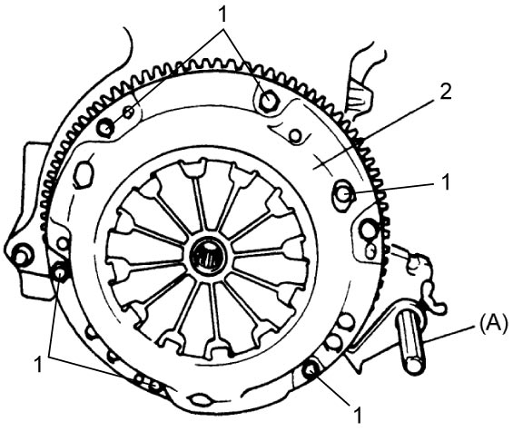
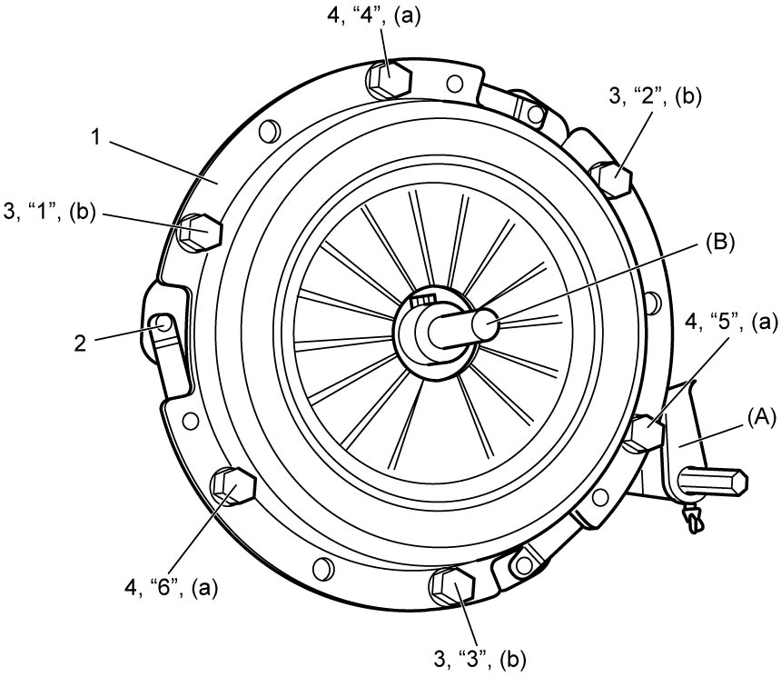

5C
| Clutch Cover and Clutch Disc Removal and Installation |
Removal
1)Dismount manual transaxle. 
2)Hold flywheel using special tool and remove clutch cover bolts (1), clutch cover (2) and clutch disc.


 "Expand image")
Installation
NOTE:
Before installation, check that flywheel surface and pressure plate surface have been cleaned and dried thoroughly.
1)Hold flywheel using special tool (A).
2)Align clutch disc with crankshaft center using special tool (B) and install clutch cover (1).
3)Install and tighten clutch cover bolts using the following procedure:
Clutch cover bolt (b): 23 N·m (2.3 kgf-m, 17.0 lbf-ft)
a)Tighten 3 bolts (3) by hand.
b)Tighten other 3 bolts (4) evenly and gradually to 5.0 N·m (0.51 kgf-m, 4.0 lbf-ft).
c)Fully tighten all bolts (3), (4) evenly and gradually to specified torque in numerical order (“1” – “6”) starting from bolt nearby strut plate rivet (2).
Tightening torque
Clutch cover bolt* (a): 5.0 N·m → 23 N·m (0.51 kgf-m → 2.3 kgf-m, 4.0 lbf-ft → 17.0 lbf-ft)Clutch cover bolt (b): 23 N·m (2.3 kgf-m, 17.0 lbf-ft)

 "Expand image")
 "Expand image")